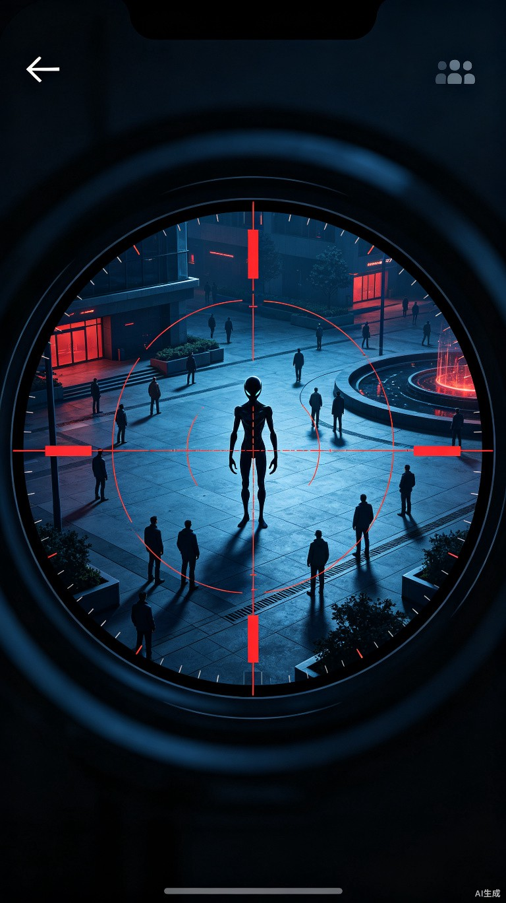
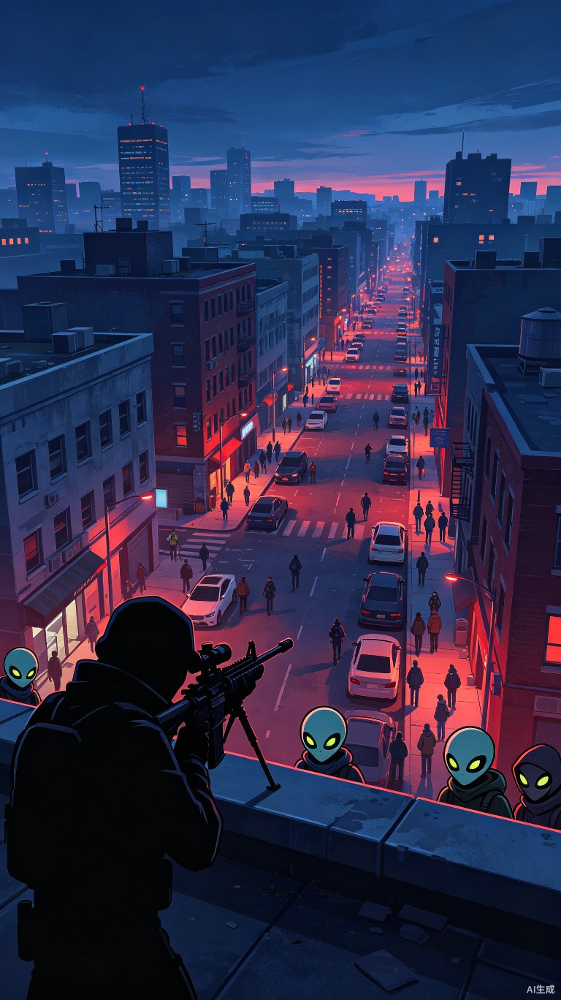
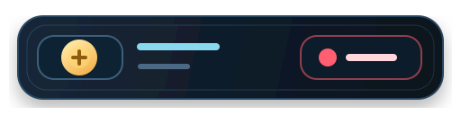
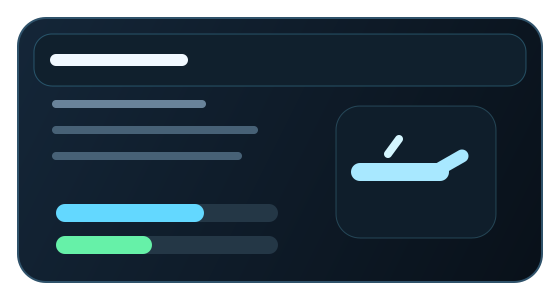
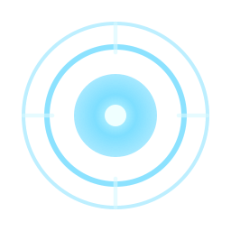
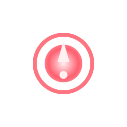

节点位置
把 root / top_bar / feedback_label / bottom_bar / content_panel / detail_panel 直接放进可视化挂点地图。
这页不是素材陈列页，而是给程序直接照着接的挂载说明板。延续上一张“程序可接入总板”的夜战基底、玻璃暗面板与移动端 HUD 插板感，但把说明重心压到推荐节点位置、触发枚举、替换顺序与兜底策略。
把 root / top_bar / feedback_label / bottom_bar / content_panel / detail_panel 直接放进可视化挂点地图。
把 fire_pressed、shot_result、tab 等入口收成统一的程序枚举块。
先底板与静态壳，再按钮、状态、反馈分帧，最后才替角色态与回放态，避免脚本接法反复返工。



镜框入口
scope_overlay / scope_draw_layer
推荐先把镜框、锁定框与时间血量接进全屏根节点，事件只驱动显示与隐藏。
底栏按钮
scan_button / time_button / fire_button / zoom
底栏按钮保持固定容器，替换素材时不改信号绑定。





先把资源挂点摆正，再谈状态切换。左侧直接把全屏战斗 HUD 与移动端商店/武器库的推荐节点落到真实位置，右侧用程序字段解释推荐节点、触发条件、替换时机与兜底方案。
feedback_label
中央反馈
crosshair_label
中心准星
scope_hint_label
准镜提示
这里把程序更容易关心的触发入口收成块，不写成长表格。每块都说明入口来自哪里、驱动哪个层、推荐何时替换以及没有素材时怎么保底。
top_bar 推荐镜像 remaining_time / killed_targets / total_targets / lives；bottom_bar 推荐镜像 zoom / scan_count / time_extend_count / hold_ratio。
crosshair_label 与 crosshair_style / crosshair_color / aim_screen_position / scope_visible 一起驱动，避免把准星样式散落在多个 UI 节点里。
post_shot_recover → slowmo → killcam → misjudgment_review 推荐挂到独立结果层，结合 search_hint_text / recognition_bonus_gold / wrong_identification_time_penalty / identification_replay_text 输出。
推荐按“底板 → 静件 → 按钮 → 状态卡 → 反馈分帧 → 角色状态”推进。这样脚本先拿到稳定容器，再逐层挂资源，不会因为后续加动效而返工根节点。
01
menu-key-art.jpg / loading-scope-art.jpg
先把主菜单与战斗背景底板挂到入口场景与 PVE 根场景。
02
hud-scope-frame.svg / hud-target-lock-frame.svg / hud-health-bar.svg / hud-time-bar.svg
镜框、锁定框、顶部血量与时间条先接静态位。
03
scan_button / time_button / fire_button / zoom / back_button
底栏与返回逻辑接好后，再挂扫描和定位类图标。
04
alien-disguised-idle.svg / alien-weakpoint-open.svg / civilian-false-clue-glint.svg
角色常态、弱点态与假线索态最后绑定到统一状态机。
05
scan-pulse-frame-* / hit-confirm-frame-* / wrong-hit-alert-frame-*
分帧反馈晚于容器接入，只切播放器资源，不拆结构。
06
post_shot_recover / slowmo / killcam / misjudgment_review
最后补慢动作、回放与误判复核，保证主流程先通再加戏。
一组资源对应一个稳定容器和一个稳定枚举。程序只改素材引用与状态值，不改节点名、不改层级、不改按钮信号，这样 UI 包切换不会拖累逻辑层。
商店和武器库也同理：先 content_panel / detail_panel，再卡片，再按钮，再状态文案。不要先接按钮态再回补容器，否则禁用态与已拥有态很容易对不上。
用战斗主视觉把镜框层、提示层、结果层与回放层讲清楚。这里直接说明资源挂在哪一层、由谁触发，以及三组反馈分帧应该怎样接入。

推荐保持战斗背景与 HUD 外壳持续存在，扫描、命中、误伤与回放都只在上层覆盖播放。
镜框层
loading-scope-art.jpg / hud-scope-frame.svg / hud-health-bar.svg / hud-time-bar.svg
提示层
feedback_label / icon-scan-radar.svg / icon-locator.svg / search_hint_text
结果层
shot_result / hit-confirm-frame-* / wrong-hit-alert-frame-* / crosshair_color
回放层
slowmo_active / killcam_active / identification_replay_text / misjudgment_review
hit
进入命中帧组，叠加奖励与确认文案。
wrong_hit
进入误伤帧组，显示扣时与误判复核。
cover / miss
保留中性反馈，不切结果帧组，只更新提示色与中心文本。

01

02

03

04

05

01
02

03
04

05

01

02

03

04

05
商店与武器库继续保持移动端 HUD 插板语义，但更偏程序挂载说明。重点是 tab、卡片、详情面板与装备按钮怎样接到固定节点，而不是把整套界面重新拼一次。